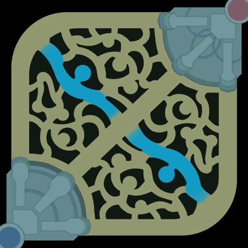

Prévia tática aproximada da visão da equipe.
Clique perto da rota desejada.
Lado da ward

Prévia tática aproximada da visão da equipe.
Lado da ward
Aceite pedidos, gerencie os jogadores e veja o histórico das comps do time.